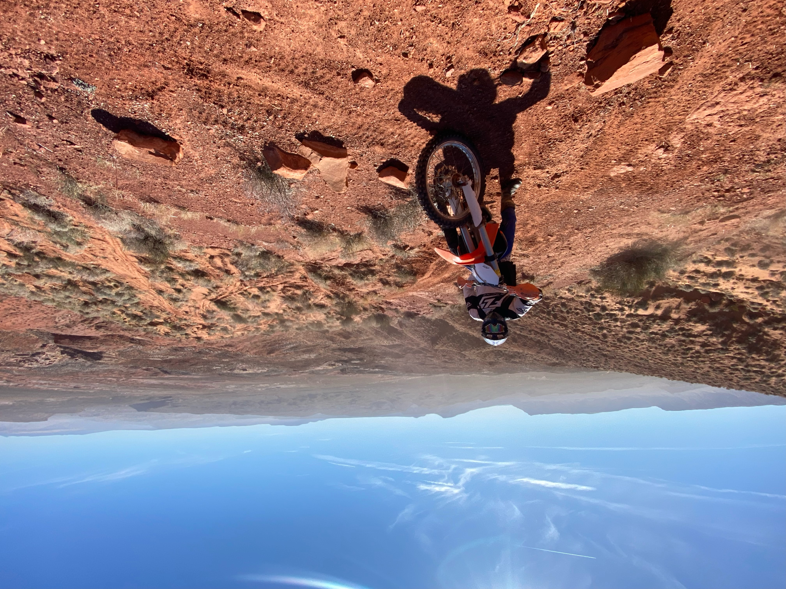
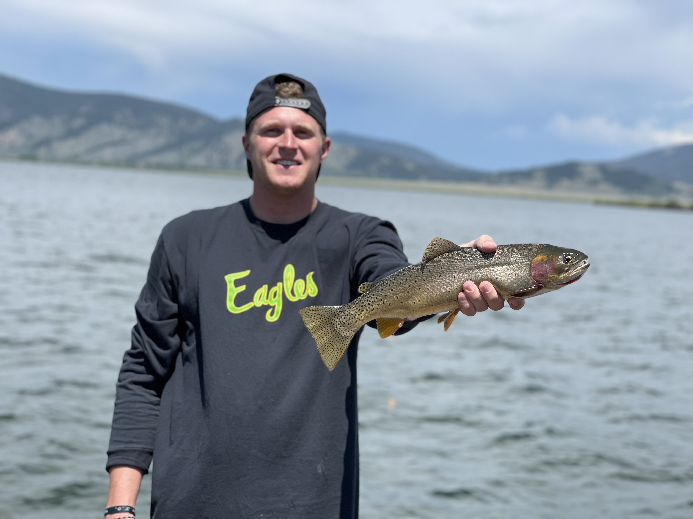

Hockey

I have played hockey since I was 5 years old. Our team made it to the high school state championship three years in a row. I currently play hockey for the BYU hockey team. I play right defense and am number 10. I love playing hockey for BYU and it is a dream come true
Dirt Bikes
Ever since I was a young kid I have loved riding dirt bikes. I got my first dirt bike on Christmas day when I was 6 years old. I love to go riding in Idaho and southern Utah. I go riding with My father, brothers, and many of my friends. This is one of my favorite things to do. I have alwyas loved riding KTM dirt bikes above all other brands.(Click here to go to the KTM Website)
BYU

I currently attend school at Brigham Young University. Growing up, I never thought I would go to BYU, but i'm so glad that I did. Coming to this school has been a great blessing. My favorite part about this school is that we are constantly learning gospel principles, no matter what subject we are learning about. Go Cougars! (BYU Website)
Mountain Biking

Another hobby of mine is mountain biking. This is a relatively new hobby for me. My favorite place to go mountain biking is either in St. George or Farmington canyon. Mountain biking is such a good way to exercise and is such a great source of fun!
Fishing
One thing that I love to do with my dad and brothers is go fly fishing. Fly fishing is a source of relaxation and fun. My favorite place to fly fish is on the Maddison river in Montana. The Maddison river has beautiful scenery and is easy to fish on. My favorite fish to catch are rainbow trout. The best time to go is in late fall when the leaves have changed colors and the fish are biting.